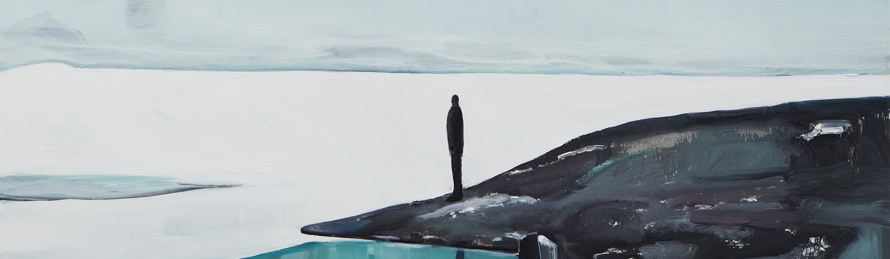

담백한 그림 속, 이야기
엄유정

엄유정
그림 안에는 소리가 없다. 너무나 당연한 이야기를 엄유정의 그림 앞에서 다시 중얼거리게 된다. 회화의 꽉 찬 캔버스와 드로잉의 생략된 선들 너머, 그녀의 작품들에는 부드럽고 뻑뻑한 정적이 고여 있다. 새하얀 설산 아래 어른거리는 누군가의 그림자, 접시 위의 빵과 메마른 사막의 모습, [풍경(Landscape)] 연작의 얼굴 없는 인물들까지, 각각 다른 주제의 그림들에서 한결같이 느껴지는 고요함은 캔버스 앞을 지나치려는 발길을 또 한 번 붙든다. 그 고요함의 공간에는 이야기도 숨어 있다. 엄유정이 포착하는 인물과 풍경은 그 순간의 전후에 존재할 법한 이야기를 상상하게 한다. 이러한 긴장감은 그녀의 그림이 언뜻 삽화처럼 보이는 이유이기도 하다. 그러나 엄유정의 그림들은 특정한 이야기를 해설하거나 지시하는 대신 회화가 원래 지니고 있던 서사의 힘을 증명한다. 다른 시간대의 다른 주제들을 그린 작품들로 구성한 일련의 시리즈들을 살펴보는 것은 한층 더 즐겁다. 때로 부딪히고 때로는 기묘한 긴장을 형성하며, 그림들은 혼자 존재할 때와는 또 다른 이야기를 들려주기 시작한다.
Desert, Sloth, bread, human things like that
엄유정의 그림은 사진처럼 솔직하다. 이 말은 여러 모순을 안고 있을 테지만, 나는 그의 그림을 볼 때마다 마치 대상을 향해 카메라 셔터를 눌렀을 때의 호기심 어린 시선을 상상하게 된다. 아이슬란드 북부에서, 모로코 사막에서, 그리고 평범한 일상의 어느 장소에서, 그가 기록해 온 일련의 풍경과 장면들에는 그것과 직접 대면하고 서 있는 한 개인의 시선과 그 대상에 몰입하는 특유의 초점이 솔직하게 배어 있다. 때문에 엄유정의 그림은, 이미 존재하는 매일의 거대한 세계 안에서 그가 새롭게 경험한 시선의 사소한 증거물이자 순간의 정서를 포착한 스냅사진 같다. 그것은 또한 인스타그램에 올려놓은 여러 장의 사진들처럼, 특별할 것 없는 일상의 장면을 떼어와 다시 스크랩하고 해시태그로 공유하는 동시대의 감성과도 닮아 있다. 그러한 특성은 특히 그의 개인전 [사막 나무늘보 빵 사람과 같은 것들](2016, 갤러리 팩토리)에서 보다 구체적이고 선명하게 나타났다. 이를테면 그의 시선이 과도하게 집중된 일련의 대상들은 흥미롭게도 전체화면처럼 세 개의 벽과 한 개의 유리벽으로 둘러싸인 전시 공간에 일제히 납작하게 펼쳐짐으로써, 더 이상 하나의 구심점을 필요로 하지 않는 그야말로 현재의 분산된 시각 이미지들을 연상시켰다.